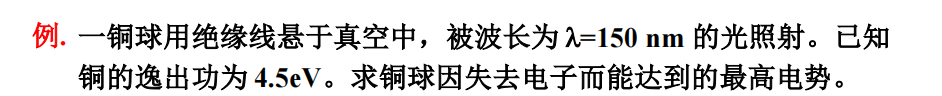
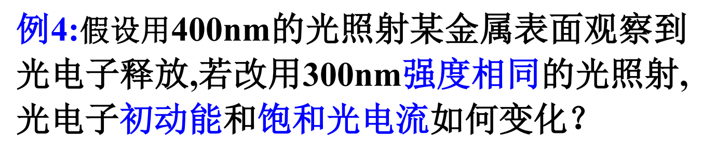
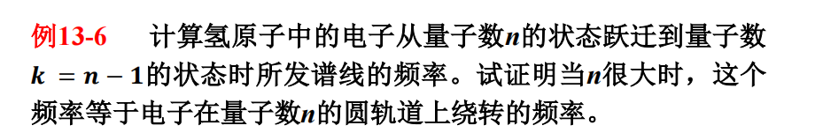
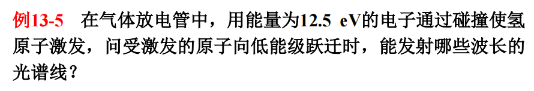
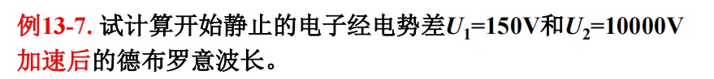

量子力学基础
本文最后更新于 2024年12月17日 上午
量子物理
一、光的量子性--光波粒二象性
二、微观粒子的波粒二象性
三、波函数和概率波及不确定性原理
四、氢原子光谱、玻尔的氢原子理论
五、薛定谔方程
六、电子的自旋和原子中电子的分布
热辐射
任一物体在任一温度下都在不断向周围空间辐射各种波长的电磁波,这种与温度有关的辐射,称为热辐射
平衡热辐射
热平衡的物体内能不变,温度不变,物体辐射的能量=物体吸收的能量
辐出度\(M(T)\):单位面积上发射的所有波长的辐射总功率\([W/m^2]\)
单色幅出度\(M_\lambda(T)\):单位表面发出波长在\(\lambda\)附近单位波长内的辐射功率\([W/m^3]\)
\(M(T)=\int^{\infty}_0M_\lambda(T)\text d\lambda\)
\(M_\lambda(T)=\dfrac{dM(T)}{d\lambda}\)
单色吸收系数\(a_\lambda\):一定温度下,物体吸收波长在\(\lambda\sim(\lambda+d\lambda)\)的电磁波能量与入射到物体上相应波长电磁波总能量之比
黑体
- 理想模型
- 黑体无反射,任何温度下对任意波长的辐射的吸收比都为1,\(M_{0\lambda}(T)=E^i_\lambda\)
基尔霍夫定律
热平衡下各种物体对相同波长的单色辐出度和单色吸收比的比值相等,都等于同温度下黑体对同一波长的单色辐出度
\(\frac{M_{\lambda 1}(T)}{a_{\lambda 1}(T)}=\frac{M_{\lambda 2}(T)}{a_{\lambda 2}(T)}=\dots =M_{0\lambda}(T)\)
黑体辐射实验定律
黑体单色辐出度随温度和波长变化,相同温度下有一个最大值
斯特藩-玻尔兹曼定律
\(M_0(T)=\int^{\infty}_0M_{0\lambda}(T)d\lambda=\sigma T^4\)
\(\sigma=5.67\times 10^{-8}W/(m^2\cdot K^4)\)
维恩位移定律
\(T\lambda_m=b\)
\(b=2.897756\times 10^{-3}m\cdot K\)
\(T_{太阳}=\dfrac{b}{\lambda_m}\approx5680K\)
\(T_{北极星}=\dfrac{b}{\lambda_m}=\dfrac{2.89\times 10^{-3} }{3500\times 10^{-10} }\approx8280K\)
\(M(T)_{太阳}=\sigma T^4\approx 5.9\times 10^{7}W/m^2\)
\(M(T)_{北极星}=\sigma T^4\approx2.7\times 10^8W/m^2\)
经典理论
维恩经验公式
\(M_0(\lambda,T)=C_1\lambda^{-5}e^{-\frac{C_2}{\lambda T} }\)
瑞利-金斯公式
\(M_0(\lambda,T)=C_3\lambda^{-4}k_BT\)
紫外灾难:短波极限为无限大
能量子假设
对频率为\(\nu\)的电磁辐射,物体不能以连续方式只能以\(h\nu\)为能量单位的不连续方位进行发射或吸收它
\(quantum\quad\varepsilon=h\nu,振子的频率\mathsf \nu ,h=6.62\times 10^{-34}J\cdot s普朗克常数\)
普朗克公式:\(M_0(\lambda,T)=2\pi hc^2\lambda^{-5}\dfrac{1}{e^{\dfrac{hc}{\lambda k_BT} }-1}\)
由普朗克公式推出斯特藩玻耳兹曼定律及维恩位移定律 \[ \begin{aligned} &C_1=2\pi hc^2,x=\frac{hc}{\lambda kT}\\ &\text dx=-\frac{hc}{\lambda^2kT}\text d \lambda\\ &M_0(x,t)=\frac{C_1k^4T^4}{h^4c^4}\frac{x^3}{e^x-1}\\ &M_o(T)=\int^\infty_0 M_{\lambda 0}(T)\text d\lambda=\frac{C_1k^4T^4}{h^4c^4}\int^\infty_0 \frac{x^3}{e^x-1}\text dx=\frac{C_1k^4T^4}{h^4c^4}\frac{\pi^4}{15}=\sigma T^4\\ &\left.\dfrac{dM_{\lambda 0} }{d\lambda}\right|_{\lambda_m}=0\rightarrow 5(1-e^{-\dfrac{hc}{\lambda_mkT} })=\dfrac{hc}{\lambda_mkT},令\dfrac{hc}{\lambda_mkT}=x\\ &x=5(1-e^{-x}),迭代法得到x=4.9651\\ &\lambda_m T=\dfrac{hc}{4.9651k}=b\\ &维恩位移定理b=2.8978\times 10^{-3}m\cdot K \end{aligned} \]
光电效应
实验规律
饱和光电流:入射单色光的光强一定时,光电流随光电管两端电势差的增加而增加,达到一饱和值\(i_m\)
相同波长的单色光,饱和光电流与光强成正比
遏止电压:减小电势差至\(U=0\)时,光电流\(i\neq 0\),光电子具有初动能,当负的电势差大到一定值时光电流完全为0,电势差的绝对值\(U_a\)为遏止电压
\(\dfrac{1}{2}mv_m^2=eU_a\)
给定波长下遏止电压和入射光强度无关
对于不同的金属,斜率相同,但是截距不同
结论:光电子从金属表面逸出具有一定的动能
- 给定波长下,最大初动能与入射光的强度无关
- 最大初动能与入射光频率成线性关系
截止频率
一定的金属阴极,入射光频率小于某个最小值时,不管光强多大,照射时间多长,没有光电子逸出,此最小频率称为该金属光电效应的截止频率或红限
| 金属 | 钨 | 钙 | 钠 | 钾 | 铷 | 铯 |
|---|---|---|---|---|---|---|
| 红限/$𝟏𝟎^{𝟏𝟒}𝐇𝐳 $ | 10.95 | 7.73 | 5.53 | 5.44 | 5.15 | 4.69 |
爱因斯坦光子假说
- 光具有粒子性,光是由一个一个的光子组成,每个光子的能量与其频率成正比,,\(\varepsilon=h\nu\),光强\(I=Nh\nu\)
- 光子只能被电子整个地吸收或释放,光子具有整体性
- 电子离开金属需要克服金属的束缚的逸出功并获得初动能
光电效应方程:\(h\nu=\dfrac{1}{2}mv_m^2+A=eU_m+A\)
解释:
- 单色光光强越强,光子数越多,释放更多光电子,饱和电流大,\(I=Nh\nu\)
- 瞬时性问题:光子被整个地吸收
- 遏止电压和照射光频率成线性关系,斜率等于\(\dfrac{h}{\nu}\)
- \(\nu\leq \dfrac{A}{h}\)时最大初动能非正,不发生光电效应,即红限\(\nu_0=\dfrac{A}{h}\)
 \[ \begin{aligned} &h\nu=eU_{max}+A\\ &U_{max}=\dfrac{h\dfrac{c}{\lambda}-A}{e}=3.8eV \end{aligned} \] 
\(\lambda\downarrow,\nu\uparrow, I=nh\nu不变,则n\downarrow,E_k=h\nu-W\uparrow,I\sim n\downarrow\)
因此,光电子的初动能增大,饱和光电流减小
光的波粒二象性
光电效应确立光的粒子性,光又有波动性
能量\(\varepsilon=h\nu=h\omega\)
质量\(m_p=\dfrac{\varepsilon}{c^2}=\dfrac{h\nu}{c^2}\)
静质量\(m_{p0}=0\)
康普顿效应
\(\Delta \lambda =\lambda_c(1-\cos\theta)=\lambda-\lambda_0,\lambda_c=0.024263\dot A\)
定性分析
康普顿的解释:
- 波长变长:康氏效应时单个光子与物质中弱束缚电子相互作用的结果
- 光子与石墨中弱束缚的电子碰撞使电子反冲,光子把部分能量传给电子,光子能量\(\downarrow\).散射X射线的频率\(\downarrow\),波长\(\uparrow\)
定量分析
\(h\nu_0+m_0c^2=h\nu+mc^2\)
动量守恒
\(\dfrac{h\nu_0}{c}=\dfrac{h\nu}{c}\cos\varphi+mV\cos\theta\)

\(\lambda=\lambda_0+\lambda_c(1-\cos\theta)\)
\(E_k=h\nu_0-h\nu=hc\left(\dfrac{1}{\lambda_0}-\dfrac{1}{\lambda}\right)\)
光的波粒二象性
光的波动性:光的干涉,衍射,偏振
光的粒子性:热辐射,光电效应,康普顿效应
普朗克-爱因斯坦关系式:\(E=mc^2=h\nu,P=mc=\dfrac{h}{\lambda}=\dfrac{E}{c}\)
\(m=\dfrac{E}{c^2}=\dfrac{h\nu}{c^2}=\dfrac{h}{c\lambda}=\dfrac{P}{c}\)
氢原子光谱
氢原子各谱线的波数\(\hat\nu\)满足里德伯方程:\(\hat\nu=R(\dfrac{1}{k^2}-\dfrac{1}{n^2})\)
\(R=1.096776\times 10^7m^{-1}(n=k+1,k+2,\cdots)\)
玻尔的假设
频率条件:当原子从某一能级跃迁到另一能级时,要发射或吸收一个光子,光子频率满足条件:
\(h\nu_{kn}=\left|E_k-E_n\right|\)
角动量量子化条件:电子角动量是量子化的,取值为:
\(L=mv_nr_n=n\dfrac{h}{2\pi}=n\hbar\)
\(h=1.05457172\times 10^{-34}J\cdot s\)
\(n=1,2,\cdots\)量子数
氢原子轨道半径
牛顿第二定律:\(m\dfrac{v^2}{r}=\dfrac{e^2}{4\pi\varepsilon_0 r^2}\Rightarrow mv^2=\dfrac{e^2}{4\pi\varepsilon_0r}\)
角动量量子化假设:\(L=mvr=nh\)
玻尔半径:\(r_1=\dfrac{\varepsilon_0h^2}{\pi me^2}=a_0=0.053\text{nm}\approx0.5\dot A\)
氢原子的能量和基态能
电子能量:\(E=\dfrac{1}{2}mv^2-\dfrac{e^2}{4\pi\varepsilon_0r}\)
\(m\dfrac{v^2}{r}=\dfrac{e^2}{4\pi\varepsilon_0r^2}\Rightarrow E=-\dfrac{e^2}{8\pi\varepsilon_0r}<0\)
\(E_n=-\dfrac{e^2}{8\pi\varepsilon_0r}=-\dfrac{me^4}{8\varepsilon_0h^2n^2}=\dfrac{E_1}{n^2}\)
基态能级\(E_1=-13.6\text{eV}\)
 \[ \begin{aligned} &\Delta E=\dfrac{me^4}{8\varepsilon_0h^2}\left(\dfrac{1}{(n-1)^2}-\dfrac{1}{n^2}\right)\\ &\nu=\dfrac{E}{h}=\dfrac{me^4}{8\varepsilon_0h^3}\left(\dfrac{1}{(n-1)^2}-\dfrac{1}{n^2}\right)\\ &=\dfrac{me^4}{8\varepsilon_0h^3}\dfrac{2n-1}{n^2(n-1)^2}\approx\dfrac{me^4}{8\varepsilon_0h^3}\dfrac{2}{n^3}=\dfrac{me^4}{4\varepsilon_0h^3n^3}(能级间距\Delta E\sim \dfrac{1}{n^3})\\ \end{aligned} \]  \[ \begin{aligned} &\Delta E=E_n-E_1=\dfrac{E_1}{n^2}-E_1\\ &E_1=-13.6eV\\ &n=\sqrt{\dfrac{13.6}{13.6-12.5} }\approx3.5\\ &可能的能级跃迁:3\rightarrow 1,2\rightarrow 1,3\rightarrow 2\\ &\dfrac{1}{\lambda_1}=R(\dfrac{1}{1^2}-\dfrac{1}{3^2})=\dfrac{8}{9}R\\ &\dfrac{1}{\lambda_2}=R(\dfrac{1}{1^2}-\dfrac{1}{2^2})=\dfrac{3}{4}R\\ &\dfrac{1}{\lambda_3}=R(\dfrac{1}{2^2}-\dfrac{1}{3^2})=\dfrac{5}{36}R\\ &\lambda_1=1.026\times 10^{-7}m,\lambda_2=1.216\times 10^{-7}m,\lambda_3=6.565\times 10^{-7}m \end{aligned} \]
微观例子的波粒二象性
德布罗意波
德布洛意关系:\(E=mc^2=h\nu=\hbar \omega\),\(P=mv=\dfrac{h}{\lambda}=\hbar k\),\(\lambda=\dfrac{h}{mv}=\dfrac{h}{m_0v}\sqrt{1-\dfrac{v^2}{c^2} }\)(德布洛意公式)
称对应粒子的波为德布洛意波
驻波形成条件
因为电子在绕原子核做圆周运动，根据波粒二象性，电子同时也是一个波，且必须为驻波才不会因为波的相干而消失
所以当\(2\pi r=n\lambda\)时，驻波头尾的相位是相同的
\(mvr=n\dfrac{h}{2\pi}=n\hbar\)
 \[ \begin{align} &E_k=eU\\ &\lambda=\dfrac{h}{p}=\dfrac{h}{\sqrt {2m_0 E_k}}=\dfrac{h}{\sqrt{2m_0e}}\dfrac{1}{\sqrt{U}}=\dfrac{1.225(nm)}{\sqrt{U}}\\ &\lambda_1=0.1nm,\lambda_2=0.0123nm\\ \end{align} \] 由此可得,电子显微镜分辨能力远大于光学显微镜,\(R=\dfrac{d}{1.22\lambda}\)
\(v=\sqrt{\dfrac{2E_k}{m_e} }=8.39\times 10^6m\cdot s^{-1}\)
\(\lambda=\dfrac{h}{m_ev}=8.67\times 10^{-11}m\)
戴维孙-革末实验
加速电压\(U=54V\),电子波长\(\lambda=\dfrac{1.225}{\sqrt{U}}=0.167\text{nm}\)
一维无线深方限势\(\begin{cases} 0,0\leq x\leq a,\\\infty,x<0或者x>a\end{cases}\)
其定态薛定谔方程:
\(\begin{cases}1)阱外:[-\dfrac{h^2}{2m}\dfrac{d^2}{dx^2}+\infty]\Psi(x)=E\Psi(x)\Rightarrow \Psi(x)=0\\2)阱内:-\dfrac{h^2}{2m}\dfrac{d^2}{dx^2}\Psi(x)=E\Psi(x)\Rightarrow \dfrac{d^2\Psi}{dx^2}+k^2\Psi=0\end{cases}\)
波函数
微观粒子的物质波在空间传播,用波函数\(\Psi(r,t)=\Psi(x,y,z,t)\)描述,称为德布洛意波函数
物质波波函数\(\Psi(x,t)=\varphi_0e^{-i(Et-Px)/\hbar}=\varphi e^{iEt/\hbar}\)
\(\varphi=\varphi_0\cdot e^{iPx/\hbar}\)称为振幅函数
\(\Psi\Psi^*=\left|\Psi\right|^2=\varphi\varphi^*=|\varphi|^2\)-仅为空间位置函数
结论:自由粒子波函数的模方对应波强
\(\dfrac{dN}{dV}\propto N\Psi\Psi^*\Rightarrow \Psi\Psi^*\propto\dfrac{dN}{NdV}\)
\(\Psi\Psi^*\)物理意义:是任一时刻t,在空间r点处单位体积中发现粒子的概率
不确定原理
微观粒子的坐标和动量是一对不能同时取确定值的物理量
\(\Delta x\cdot \Delta P_x\geq\dfrac{\hbar}{2}\)
思想实验:电子单缝衍射
动量为p电子水平入射,单缝缝宽\(\Delta x=d\)
电子是波,衍射主要落在中央明纹内,\(d\sin\theta_1=\lambda\Rightarrow \Delta x\sin\theta_1=\lambda\)
电子是粒子,电子和衍射屏作用获得竖直方向动量分量\(p_x\approx 2p\sin\theta_1\)
德布罗意波的波长\(p\lambda=h\Rightarrow \Delta x\Delta p_x=2h\)
对于落在其他明纹内的电子,\(\Delta p_x\geq 2p\sin\theta_1,\Delta x\cdot\Delta p_x\geq 2h\)
能量与时间的不确定关系
\(\Delta E\cdot\tau\geq \dfrac{\hbar}{2},\Delta E为激发态的能级宽度,\tau为激发态的平均寿命\Leftarrow \tau\Delta \nu\sim 1\)

\(\Delta x\approx 10^{-10}m,\Delta \nu=\dfrac{\Delta p}{m}\geq \dfrac{1}{m}\dfrac{\hbar}{2\Delta r}\approx5.8\times 10^{5}m/s\)
薛定谔方程
\(i\hbar\dfrac{\delta}{\delta t}\Psi=[-\dfrac{\hbar}{2m}(\dfrac{\delta^2}{\delta^2 x}+\dfrac{\delta^2}{\delta^2 y}+\dfrac{\delta^2}{\delta^2 z})+U(x,y,z,t)]\Psi=[-\dfrac{\hbar}{2m}\bigtriangledown^2+U(x,y,z,t)]\Psi=\hat H(x,y,z,t)\Psi\)
\(\bigtriangledown^2\)拉普拉斯算符
\(\hat H\)哈密顿算符